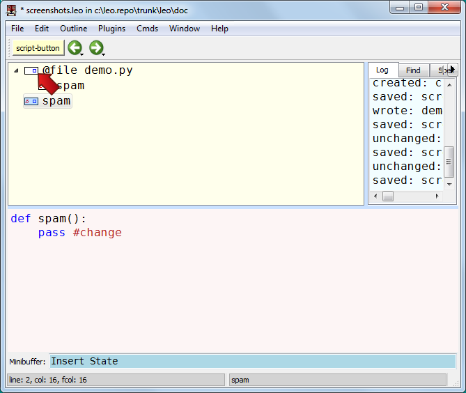
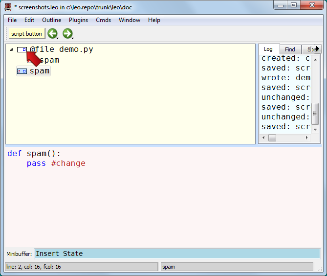

Keeping track of changes: 2¶
Changing either clone marks both as changed and marks any ancestor @file nodes as changed as well.
This ensures that saving the .leo file will also save all changed external files.
Changing either clone marks both as changed and marks any ancestor @file nodes as changed as well.
This ensures that saving the .leo file will also save all changed external files.
